十五夜にはススキのおもちゃを [梅吉]
昨夜は十五夜、明日は満月。
梅吉さんはお気に入りのススキ風じゃらしで遊びましたよ。

使い込んでもうボロボロです^^;
遊び方も一工夫。自ら「きーーーーーーーっ！！！！」となる状況を作っております。
届かないねぇ(^▽^;) 不思議だねぇ(⌒_⌒;
･゜ﾟ･*:.｡..｡.:*･゜ﾟ･*:.｡. .｡.:*･゜ﾟ･*･゜ﾟ･*:.｡..｡.:*･゜ﾟ･*:.｡..｡.:*･゜ﾟ･* ･゜ﾟ･*:.｡..｡.:*･゜ﾟ･*:.｡. .｡.:*
先日ペットのおうちのIDタグの事を記事にしたのですが
記事を書いた後に梅吉の首輪にIDタグを付けてみると・・・嫌がられました(꒦ິ⌑꒦ີ)
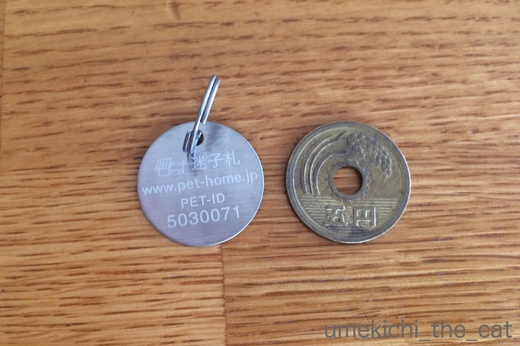
IDタグは五円玉と同じ大きさでステンレス製。
まず五円玉大というのが梅吉ぐらいの体型（体重4.5Kg程）の猫には大きいかな、と感じました。
中型犬だと問題なさそうですが猫全般にはちょっと厳しいかもしれません。
（もちろん個体差はあるでしょう）
次にステンレスの材質が冷やっとして嫌そうな感じに見えました。
プラスチックだったら？とも思うのですが劣化の度合いや耐久性で
ステンレスが採用になったと思われます。
（米兵の認識票＝ドッグタグ、もステレンレスやアルミ素材ですよね。過酷な環境でも耐えられる。）
梅吉には日常的にIDタグをつけていて欲しいと思ったのですが
嫌がる様子を見ているとても我慢させる事は出来ませんでした。
が、せっかく発行されたID番号はどうにか生かしたいと思っています。
首輪にそうした情報を縫い付けてくれる製品もあるのでそちらを検討しようかな・・・
ちらっと検索してみるとPEPPYからこんな製品が出ていました。
日本では未発売ですが、外国ではGPS付き首輪なんていうのも出ているようですね。
ペットのおうちにはID検索の分かりにくさと、IDタグを嫌がりましたという件をあわせて
一利用者の声としてメールしておきました。
けっしてクレームではなく「良いシステムなので改善していただけるとありがたい」
という気持ちを込めて。。
梅吉がIDタグを嫌がったのも珍しいケースで
「全然平気でしたー」というニャンコもいらっしゃるかと思います。
あくまでも我が家の場合の出来事です。
ただ、もし申し込みを検討してらっしゃる方がいたら
「IDタグが付けられない」可能性も念頭においてね！
という記事でした。
 ↑ガブッと一押し↑
↑ガブッと一押し↑
梅吉さんはお気に入りのススキ風じゃらしで遊びましたよ。

使い込んでもうボロボロです^^;
遊び方も一工夫。自ら「きーーーーーーーっ！！！！」となる状況を作っております。
届かないねぇ(^▽^;) 不思議だねぇ(⌒_⌒;
･゜ﾟ･*:.｡..｡.:*･゜ﾟ･*:.｡. .｡.:*･゜ﾟ･*･゜ﾟ･*:.｡..｡.:*･゜ﾟ･*:.｡..｡.:*･゜ﾟ･* ･゜ﾟ･*:.｡..｡.:*･゜ﾟ･*:.｡. .｡.:*
先日ペットのおうちのIDタグの事を記事にしたのですが
記事を書いた後に梅吉の首輪にIDタグを付けてみると・・・嫌がられました(꒦ິ⌑꒦ີ)
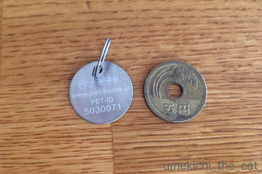
IDタグは五円玉と同じ大きさでステンレス製。
まず五円玉大というのが梅吉ぐらいの体型（体重4.5Kg程）の猫には大きいかな、と感じました。
中型犬だと問題なさそうですが猫全般にはちょっと厳しいかもしれません。
（もちろん個体差はあるでしょう）
次にステンレスの材質が冷やっとして嫌そうな感じに見えました。
プラスチックだったら？とも思うのですが劣化の度合いや耐久性で
ステンレスが採用になったと思われます。
（米兵の認識票＝ドッグタグ、もステレンレスやアルミ素材ですよね。過酷な環境でも耐えられる。）
梅吉には日常的にIDタグをつけていて欲しいと思ったのですが
嫌がる様子を見ているとても我慢させる事は出来ませんでした。
が、せっかく発行されたID番号はどうにか生かしたいと思っています。
首輪にそうした情報を縫い付けてくれる製品もあるのでそちらを検討しようかな・・・
ちらっと検索してみるとPEPPYからこんな製品が出ていました。
日本では未発売ですが、外国ではGPS付き首輪なんていうのも出ているようですね。
ペットのおうちにはID検索の分かりにくさと、IDタグを嫌がりましたという件をあわせて
一利用者の声としてメールしておきました。
けっしてクレームではなく「良いシステムなので改善していただけるとありがたい」
という気持ちを込めて。。
梅吉がIDタグを嫌がったのも珍しいケースで
「全然平気でしたー」というニャンコもいらっしゃるかと思います。
あくまでも我が家の場合の出来事です。
ただ、もし申し込みを検討してらっしゃる方がいたら
「IDタグが付けられない」可能性も念頭においてね！
という記事でした。
今週末は試練の時 [梅吉]
毎日気ままな梅吉さんは

眠くなったらニンゲンの椅子を占領して丸くなって眠ったり

白目をむいてみたり

ニンゲンを敷き布団の様に使って平べったくなってみたり

気が向いたらおとーさんの手をがぶがぶしたりしていますけどね
今週末は大試練が待っているのですよ。

![[猫]](https://blog.ss-blog.jp/_images_e/101.gif) なぬっ！？
なぬっ！？
今週末は梅吉の年に一度の予防接種と血液検査の日。
最大の試練とは朝食抜きで行かなければならない事( ；∀；)
梅吉には夜ベッドに入る前（毎日だいだい23時頃）にご飯をあげています。
夜中に一度は私を起こし５〜６粒のおやつをおねだり。
おねだりは寝ている私の頭を一方のお手手で「ていてい」してくるのですが
無視しているとエンドレス「ていてい」・・・
しかも起きないでいると腹が立ってくるらしく始めは肉球の腹で優しくしていた「ていてい」に
全開の爪がつき両手で「ほりほり」へと変わって行きます。
はっきりいって寝てなんかいられませんw
この「ていてい→ほりほり」をかわし、朝起きてから病院へ出かけるまで（家を出るのは午前9時過ぎ）を
どうやって過ごさせるかが問題なのです。
夜ゆっくり眠るのはもう諦めました(꒦ິ⌑꒦ີ)
朝起きてからの時間も（おそらく）お怒りのかぶがぶを受けながら耐えるしかないでしょう・・・
みなさま、どうか空腹な梅吉のお怒りが少しでもマイルドなものである様に
祈っていてくださると嬉しいです(꒦ິ⌑꒦ີ)
血液検査もワクチンも無事に済ませたら３連休中は「僕のワンダフル・ライフ」か
京都国立博物館に行きたいわー！
↑ガブッと一押し↑

眠くなったらニンゲンの椅子を占領して丸くなって眠ったり

白目をむいてみたり

ニンゲンを敷き布団の様に使って平べったくなってみたり

気が向いたらおとーさんの手をがぶがぶしたりしていますけどね
今週末は大試練が待っているのですよ。

今週末は梅吉の年に一度の予防接種と血液検査の日。
最大の試練とは朝食抜きで行かなければならない事( ；∀；)
梅吉には夜ベッドに入る前（毎日だいだい23時頃）にご飯をあげています。
夜中に一度は私を起こし５〜６粒のおやつをおねだり。
おねだりは寝ている私の頭を一方のお手手で「ていてい」してくるのですが
無視しているとエンドレス「ていてい」・・・
しかも起きないでいると腹が立ってくるらしく始めは肉球の腹で優しくしていた「ていてい」に
全開の爪がつき両手で「ほりほり」へと変わって行きます。
はっきりいって寝てなんかいられませんw
この「ていてい→ほりほり」をかわし、朝起きてから病院へ出かけるまで（家を出るのは午前9時過ぎ）を
どうやって過ごさせるかが問題なのです。
夜ゆっくり眠るのはもう諦めました(꒦ິ⌑꒦ີ)
朝起きてからの時間も（おそらく）お怒りのかぶがぶを受けながら耐えるしかないでしょう・・・
みなさま、どうか空腹な梅吉のお怒りが少しでもマイルドなものである様に
祈っていてくださると嬉しいです(꒦ິ⌑꒦ີ)
血液検査もワクチンも無事に済ませたら３連休中は「僕のワンダフル・ライフ」か
京都国立博物館に行きたいわー！
コウモリさんはいかがでしょう？ [梅吉]
ショップのディスプレイがハロウィン一色になってきましたね。
自分には無縁のイベントと思っていましたが梅吉を見るとうずうず・・・・・

なので買ってきちゃいました！コウモリさんの羽ですよー。
スリコ（３coinsをこう呼ぶらしい・・・お店の袋に書いてあったわw)でゲット。

ごあいさつの ねこぱんち いくでー

てきいがあるんかいな？ がぶしてたしかめとこ
梅吉さん、コウモリさんの羽、付けてくれますか？
頭にのっければなんとかなる被り物ではなく
両腕にゴムを通して背負わせるタイプ。果たして協力していただけるのでしょうか。
ハロウィンの日、注目ですよ＾＾
先日からのフュージョン関係の記事に絡んで懐かしいレコードを
ごそごそと引っ張り出して来ました。
もちろん梅吉もすっとんで来ましたよ。
レコードプレーヤーが動いているの見るの初めてだったかしら・・・
やんちゃMaxのお子ちゃま時代だったらプラスチックのフタを突き破っていたかも(^▽^;)
↑ガブッと一押し↑
自分には無縁のイベントと思っていましたが梅吉を見るとうずうず・・・・・

なので買ってきちゃいました！コウモリさんの羽ですよー。
スリコ（３coinsをこう呼ぶらしい・・・お店の袋に書いてあったわw)でゲット。


梅吉さん、コウモリさんの羽、付けてくれますか？
頭にのっければなんとかなる被り物ではなく
両腕にゴムを通して背負わせるタイプ。果たして協力していただけるのでしょうか。
ハロウィンの日、注目ですよ＾＾
先日からのフュージョン関係の記事に絡んで懐かしいレコードを
ごそごそと引っ張り出して来ました。
もちろん梅吉もすっとんで来ましたよ。
レコードプレーヤーが動いているの見るの初めてだったかしら・・・
やんちゃMaxのお子ちゃま時代だったらプラスチックのフタを突き破っていたかも(^▽^;)
水曜日のネコ〜一度はやってみたかった〜 [梅吉]
タイトルで皆様「ああ、あれですね・・・」と想像なさったのではないでしょうか^^;
その通り！！

いくらなんでも平日の昼間っから一人宅飲みはしていませんから。
写真は先週の水曜日の夕食時のものです。ご安心くださいね＾＾

は〜い！「水曜日のネコ」と一緒に写真を撮りますよ![[カメラ]](https://blog.ss-blog.jp/_images_e/68.gif)
・・・とっても気の無さそうな水曜日のねこ。

写真を撮り続けているとものすご〜く迷惑そうな顔をして
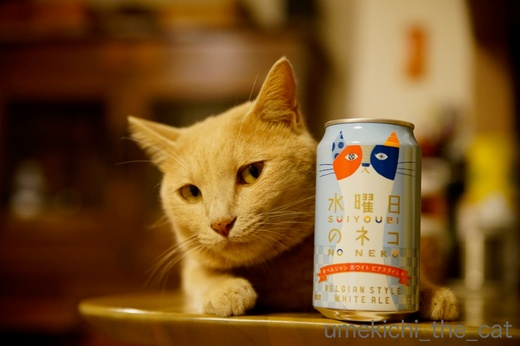
睨まれちゃいましたヾ(*ΦωΦ)ﾉ
じゃらしを振り回したら睨んでいない目線はいただけましたが
梅吉の後ろに物干し台の脚が写っているし、ビリビリのビニール袋の上だし・・・
再チャレンジしたい！と思った水曜日のねこの写真でしたw
･゜ﾟ･*:.｡..｡.:*･゜ﾟ･*:.｡. .｡.:*･゜ﾟ･*･゜ﾟ･*:.｡..｡.:*･゜ﾟ･*:.｡..｡.:*･゜ﾟ･* ･゜ﾟ･*:.｡..｡.:*･゜ﾟ･*
前記事で「高中正義」に反応された皆様！！
ギター・マガジン10月号は「Japanese Fusion&AOR」の特集ですよ〜。
ぜひぜひ＾＾

↑ガブッと一押し↑
その通り！！

いくらなんでも平日の昼間っから一人宅飲みはしていませんから。
写真は先週の水曜日の夕食時のものです。ご安心くださいね＾＾

は〜い！「水曜日のネコ」と一緒に写真を撮りますよ
・・・とっても気の無さそうな水曜日のねこ。

写真を撮り続けているとものすご〜く迷惑そうな顔をして
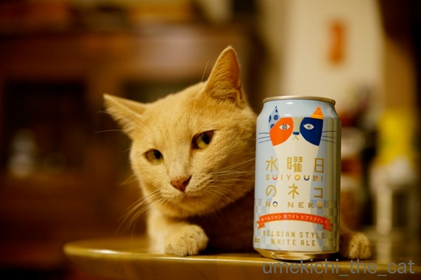
睨まれちゃいましたヾ(*ΦωΦ)ﾉ
じゃらしを振り回したら睨んでいない目線はいただけましたが
梅吉の後ろに物干し台の脚が写っているし、ビリビリのビニール袋の上だし・・・
再チャレンジしたい！と思った水曜日のねこの写真でしたw
･゜ﾟ･*:.｡..｡.:*･゜ﾟ･*:.｡. .｡.:*･゜ﾟ･*･゜ﾟ･*:.｡..｡.:*･゜ﾟ･*:.｡..｡.:*･゜ﾟ･* ･゜ﾟ･*:.｡..｡.:*･゜ﾟ･*
前記事で「高中正義」に反応された皆様！！
ギター・マガジン10月号は「Japanese Fusion&AOR」の特集ですよ〜。
ぜひぜひ＾＾

枕で嬉しゅうございます [梅吉]


梅吉の主張 [梅吉]
と主張する梅吉さん

そんなにお顔が出ているのにですか(*>艸<)

虚無僧スタイルはもう日常の出来事。
今日は仏門に入ることに少し迷いがある様ですw

ローテーブルの下に潜り込むのも上手くなって来ました。
自分が「隠れている」と思っている時は思い切り目があってもスルーされます。
体を触ると
という反応(^▽^;)
懐かしい隠れ場所にもリトライ。そこには入らないでって言ったのに・・・(꒦ິ⌑꒦ີ)
この時は目があっても知らん顔されず、ドヤ顏されました・・・
埃まみれになるのがそんなに嬉しいんですかーー！！
掃除しなきゃ・・・・・( ；∀；)
隠れいている？と思うとそうでない事も。
ソファの背もたれの陰に潜んでいるところを覗き込んで見たところ・・・
この後お尻をぷりぷり振って飛びついて来ましたwww
招く手の正体と秋の七草 [梅吉]


スキマスキーの変形と真夏の恐怖体験 [梅吉]
洗濯槽にタオルケットを放り込み、その場を離れて戻ってきたら・・・・
なんかいる。
（我が家はまだ普通の縦型全自動洗濯機。ドラム型洗濯乾燥機が欲しいなぁ・・・）

なんやねん どかへんで きょうのせんたくはあきらめとき
時々洗濯ネットに入った洗濯物をがぶけりしたくなる梅吉さん。
湿った衣類に燃えるみたいです(*>艸<)
大物のお洗濯なので洗濯ネットは使いませんよ。残念でした。
がぶがぶ出来なかった腹いせか洗濯槽に籠城を決め込む様です。
しばし放っておけば飽きるでしょう・・・・・と少しして戻ってみると
こらーーー！寝ないでください！！
もちろんこの後強制撤去しましたよ。
梅吉はこういう狭い所に入るのが大好きです。
幼い頃は洗濯槽で寝ていることもあって姿が見えなくて慌てて探し回ったことも。
先代猫は狭いところが大嫌いでパニックになるタイプだったので
猫らしい梅吉の行動はちょっと新鮮でした。
もうひとつ新鮮だったのが
洗濯ネットに入るのが好きだったこと。（梅吉４〜５ヶ月の頃）
「入ってみる？」と口を開けたら進んで入っていきました(^▽^;)
この中に入って遊ぶのがお気に入りだったんですよー。
洗濯槽も洗濯ネットもスキマスキーの変形でしょうか＾＾
↑ガブッと一押し↑
なんかいる。
（我が家はまだ普通の縦型全自動洗濯機。ドラム型洗濯乾燥機が欲しいなぁ・・・）

時々洗濯ネットに入った洗濯物をがぶけりしたくなる梅吉さん。
湿った衣類に燃えるみたいです(*>艸<)
大物のお洗濯なので洗濯ネットは使いませんよ。残念でした。
がぶがぶ出来なかった腹いせか洗濯槽に籠城を決め込む様です。
しばし放っておけば飽きるでしょう・・・・・と少しして戻ってみると
こらーーー！寝ないでください！！
もちろんこの後強制撤去しましたよ。
梅吉はこういう狭い所に入るのが大好きです。
幼い頃は洗濯槽で寝ていることもあって姿が見えなくて慌てて探し回ったことも。
先代猫は狭いところが大嫌いでパニックになるタイプだったので
猫らしい梅吉の行動はちょっと新鮮でした。
もうひとつ新鮮だったのが
洗濯ネットに入るのが好きだったこと。（梅吉４〜５ヶ月の頃）
「入ってみる？」と口を開けたら進んで入っていきました(^▽^;)
この中に入って遊ぶのがお気に入りだったんですよー。
洗濯槽も洗濯ネットもスキマスキーの変形でしょうか＾＾
ジャンプの写真とマニアックな視点 [梅吉]
おもちゃで遊ぶ時の梅吉は走る（走り回る）かジャンプする（しまくる）ことがほとんど。
テレビ番組や雑誌に登場するにゃんこの様に可愛らしくじゃらしにちょいちょいすることは
ほとんどありません(^▽^;)
可愛らしく遊んでくれないのだったらジャンプの躍動感あふれる様子を上手くカメラに収めたい
と思うのですがそれはとても難しいことで・・・
撮れるのはこんな体の一部の写真や

今まさに飛び上がろうと踏ん張る写真(*>艸<)
これはこれで好きな写真なんですけどねー。
これは床を蹴って上昇していく途中のお腹ww
これも飛び上がる寸前の踏ん張る姿。顔までリキんでいるのがたまりません。。
さっきから体の一部の写真と踏ん張る顔の写真ばっかりですけど・・・・・って
そう！そうなんです！！
ジャンプの瞬間を撮ろうと量産するボツ写真を見ているうちに
この二つのアングル＆表情の写真が大好きになってしまったーーー！！！
時にはこんな写真もあったりして

キャーーーーー(〃▽〃)あちがイイねーーーーーーーーＯ(≧▽≦)Ｏ
マニアックな視点のボツ写真バンザイ\( ˆoˆ )/
（梅吉の横に物干し台がなければもっと良いんだけど）
でも今回はちゃんとしたジャンプの瞬間の写真も撮れましたよ。
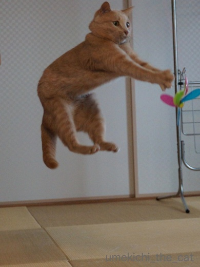
梅吉ジャ〜〜〜〜ンプ！！
↑ガブッと一押し↑
テレビ番組や雑誌に登場するにゃんこの様に可愛らしくじゃらしにちょいちょいすることは
ほとんどありません(^▽^;)
可愛らしく遊んでくれないのだったらジャンプの躍動感あふれる様子を上手くカメラに収めたい
と思うのですがそれはとても難しいことで・・・
撮れるのはこんな体の一部の写真や

今まさに飛び上がろうと踏ん張る写真(*>艸<)
これはこれで好きな写真なんですけどねー。
これは床を蹴って上昇していく途中のお腹ww
これも飛び上がる寸前の踏ん張る姿。顔までリキんでいるのがたまりません。。
さっきから体の一部の写真と踏ん張る顔の写真ばっかりですけど・・・・・って
そう！そうなんです！！
ジャンプの瞬間を撮ろうと量産するボツ写真を見ているうちに
この二つのアングル＆表情の写真が大好きになってしまったーーー！！！
時にはこんな写真もあったりして

キャーーーーー(〃▽〃)あちがイイねーーーーーーーーＯ(≧▽≦)Ｏ
マニアックな視点のボツ写真バンザイ\( ˆoˆ )/
（梅吉の横に物干し台がなければもっと良いんだけど）
でも今回はちゃんとしたジャンプの瞬間の写真も撮れましたよ。
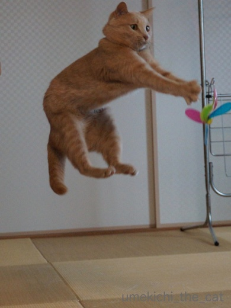
梅吉ジャ〜〜〜〜ンプ！！
梅吉のおもてなし [梅吉]
週末、我が家にお客様がいらっしゃいました。
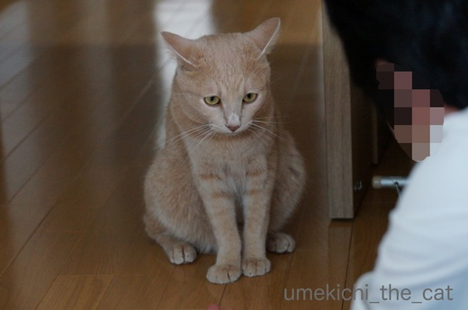
「梅吉くんこんにちはー。いつもおとーさんのFBで見てるよー！」
それはおおきに （思いっきりイカ耳(*>艸<)）
梅吉さんに会いたいって来てくれたんですよ。
緊張や遠慮することはありません。いつもの調子で行きましょうよ〜。

ほんまかいな あそぼういってくれはるけど がぶがぶしてもええんやろか・・・・・
（更なるイカ耳(*>艸<)）

ほな かるくごあいさつや
猫ぱんちの５秒前ww
（猫ぱんちの瞬間、うまく写っていませんでした、残念！）

ぱんちのつぎはー がぶやで〜

がぶ〜っ
多少遠慮がちですががぶ入りました！！
梅吉さん、いつもの調子出て来たんじゃないですか？
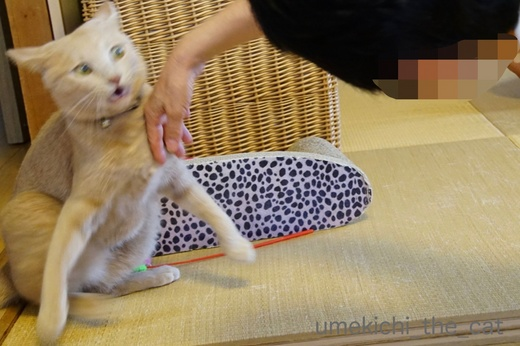
なんやわし むっちゃやるきでてきたで！！
ああ、目が「風神雷神」・・・・・

がぶや！がぶがぶ！！
ああ！！Σ(ﾟ◇ﾟ；)お客様相手に結構な勢いのかぶでした (^▽^;)
いつもは「そろそろ危ないな」という所で私が梅吉を引き止めるのですが
今回はおっとの高校時代のお友達だし梅吉に会いに来てくださったのだから
と手を出さずに見ていたのですが・・・
梅吉、お客様にも容赦しませんww
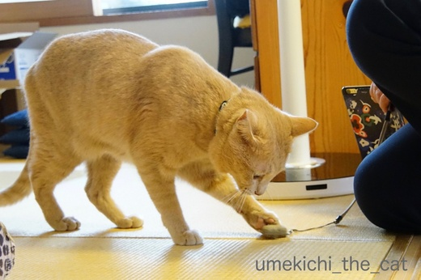
お客様のスマホ用“黒板消し”クリーナーに興味津々。
「隠れちゃって姿が見えなかったね」って言われちゃうより良いですよね？梅吉さん。

せやで うめきちりゅう おもてなししたったで
おっとのお友達、お仕事がてらではありましたが横浜からいらしたんですよ。
梅吉がぶの跡が赤い線になっていなければ良いのですが・・・・・
↑ガブッと一押し↑
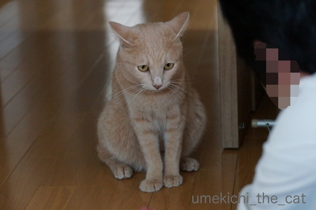
「梅吉くんこんにちはー。いつもおとーさんのFBで見てるよー！」
梅吉さんに会いたいって来てくれたんですよ。
緊張や遠慮することはありません。いつもの調子で行きましょうよ〜。

（更なるイカ耳(*>艸<)）

猫ぱんちの５秒前ww
（猫ぱんちの瞬間、うまく写っていませんでした、残念！）


多少遠慮がちですががぶ入りました！！
梅吉さん、いつもの調子出て来たんじゃないですか？
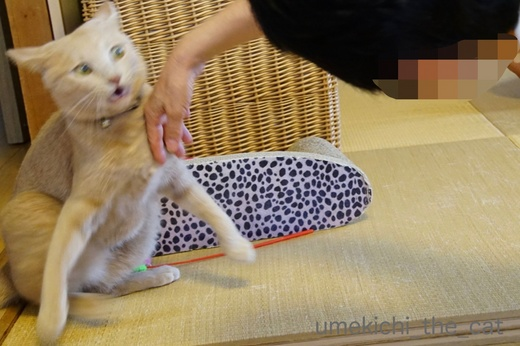
ああ、目が「風神雷神」・・・・・

ああ！！Σ(ﾟ◇ﾟ；)お客様相手に結構な勢いのかぶでした (^▽^;)
いつもは「そろそろ危ないな」という所で私が梅吉を引き止めるのですが
今回はおっとの高校時代のお友達だし梅吉に会いに来てくださったのだから
と手を出さずに見ていたのですが・・・
梅吉、お客様にも容赦しませんww
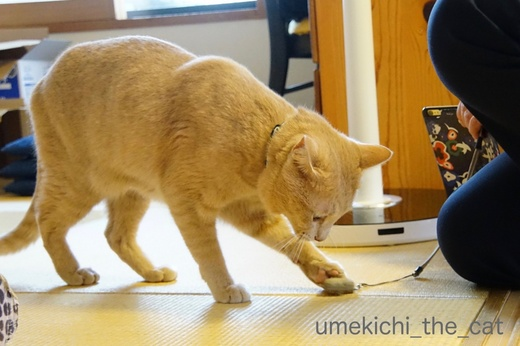
お客様のスマホ用“黒板消し”クリーナーに興味津々。
「隠れちゃって姿が見えなかったね」って言われちゃうより良いですよね？梅吉さん。

おっとのお友達、お仕事がてらではありましたが横浜からいらしたんですよ。
梅吉がぶの跡が赤い線になっていなければ良いのですが・・・・・

カフェオレ色の梅吉

梅吉 2023年8月10日 永眠


梅吉と出会った譲渡会

犬猫の理由なき殺処分ゼロ
妄想広告
UMEKICHI 光

爆発的に早い！
時々攻撃的！
Thanks to Mr.Boss365
爆発的に早い！
時々攻撃的！
Thanks to Mr.Boss365